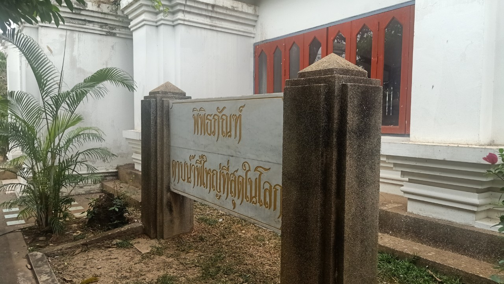

สถานที่พักผ่อนและแหล่งเรียนรู้ในอุตรดิตถ์


สถานที่พักผ่อนและแหล่งเรียนรู้ในอุตรดิตถ์
อนุสาวรีย์พระยาพิชัยดาบหัก
อนุสาวรีย์พระยาพิชัยดาบหัก ที่อยู่ : ประดิษฐานอยู่หน้าศาลากลางจังหวัดอุตรดิตถ์ สร้างขึ้นเพื่อเป็นเกียรติประวัติในความกล้าหาญ รักชาติและเสียสละ เมื่อครั้งพระยาพิชัยครองเมืองพิชัยในสมัยธนบุรี ท่านได้สร้างเกียรติประวัติไว้ ภายในบริเวณมีพิพิธภัณฑ์ดาบเหล็กน้ำพี้ใหญ่ที่สุดในโลก อันเป็นที่เก็บรักษาดาบเหล็กน้ำพี้ใหญ่ที่สุดในโลก
พระยาพิชัยดาบหัก เป็นขุนนางในสมัยอยุธยาตอนปลายและธนบุรี ปรากฏชื่อในพระราชพงศาวดารเนื่องจากเป็นทหารเอกคู่พระทัยของสมเด็จพระเจ้ากรุงธนบุรี และเป็นผู้มีส่วนกอบกู้เอกราชของชาติไทยหลังการเสียกรุงศรีอยุธยาครั้งที่สอง เดิมท่านชื่อ จ้อย เกิดที่บ้านห้วยคา อำเภอพิชัย จังหวัดอุตรดิตถ์ ในสมัยปลายกรุงศรีอยุธยา ศึกษาอยู่กับท่านพระครูวัดมหาธาตุหรือวัดใหญ่ เมืองพิชัย ภายหลัง จ้อยได้เปลี่ยนชื่อใหม่เป็นทองดี หรือ ทองดีฟันขาว มีความสามารถและชื่อเสียงอย่างยิ่งทั้งทางเชิงมวยและเชิงดาบ จนได้เข้ารับราชการกับสมเด็จพระเจ้ากรุงธนบุรี ตั้งแต่ครั้งดำรงตำแหน่งเป็นพระยาตาก ต่อมานายทองดีได้รับแต่งตั้งเป็นองครักษ์มีบรรดาศักดิ์เป็น "หลวงพิชัยอาสา" เมื่อรับราชการมีความดีความชอบจึงได้รับแต่งตั้งเป็น เจ้าหมื่นไวยวรนาถ พระยาสีหราชเดโช และพระยาพิชัย ผู้สำเร็จราชการครองเมืองพิชัย ซึ่งรับพระราชทานเครื่องยศเสมอเจ้าพระยาสุรสีห์ ตามลำดับ

ดาบเหล็กน้ำพี้กับชาวอุตรดิตถ์มีความเกี่ยวเนื่องกัน มาจากบุคคลทางประวิตศาสตร์ คือ “ท่านยาพิชียดาบหัก” ซึ่งท่านยาพิชัยเป็นเจ้าเมืองในสมัยธนบุรี ซึ่งในตำนานได้เล่าสืบต่อกันมาว่าข้าศึก ศัตรูในสมัยโบราณมีการลงอักขระไว้ที่ร่างกาย ซึ่งท่านยาพิชัยได้ใช้ดาบเหล็กน้ำพี้ปราบข้าศึกศัตรูจนชนะมาหลายครั้งแล้ว ทำให้คนโบราณเชื่อกันว่า ดาบเหล็กน้ำพี้สามารถฟันฝ่าอักขระบนตัวของข้าศึกได้ แล้วถ้าใครได้ครอบครองดาบเหล็กน้ำพี้ก็จะช่วยป้องกันสิ่งชั่วร้ายที่เข้ามาได้ และยังช่วยเสริมสร้างบารมีได้อีกด้วย
อาคารพิชัยนันทกาวุธ ภายในอาคารเป็นโถงกว้าง กลางห้องเป็นแท่นขนาดใหญ่ประดิษฐานดาบเหล็กน้ำพี้ ขนาดยาวประมาณ 10 เมตรเศษ

ด้านหน้าจะมีป้ายพิพิธภัณฑ์อธิบายเกี่ยวกับพิพิธภัณฑ์ ภายในรวบรวมสิ่งของสะสมของเก่าแก่ ทั้งเครื่องใช้ ของขลัง และแร่เหล็กน้ำพี้ แต่ล่ะชิ้นเจ้าของมอบให้มาจัดแสดงอย่างที่หาชมที่อื่นไม่ได้